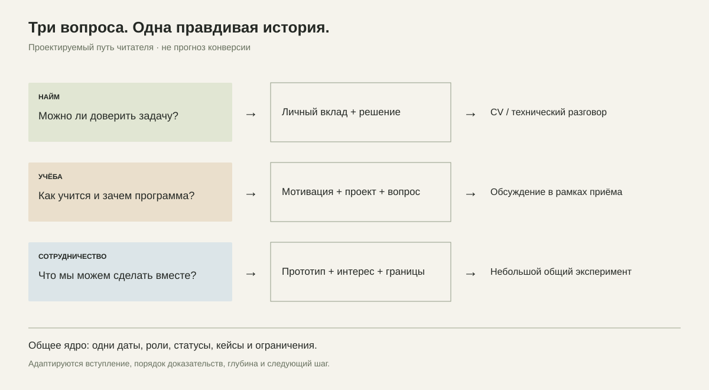

ТИМОФЕЙ ЯКОВЛЕВ / ИССЛЕДОВАНИЕ / RU + EN
Один человек. Три повода познакомиться: работа, учёба и сотрудничество. Здесь — аргументы, тексты и три пробы подачи. Сайт не опубликован; это локальный просмотр исследовательского пакета.
Markdown-файлы читаются в GitHub или текстовом редакторе.

Визуальные пробы используют синтетические иллюстрации. Закрытые исходники и материалы работодателя не опубликованы.